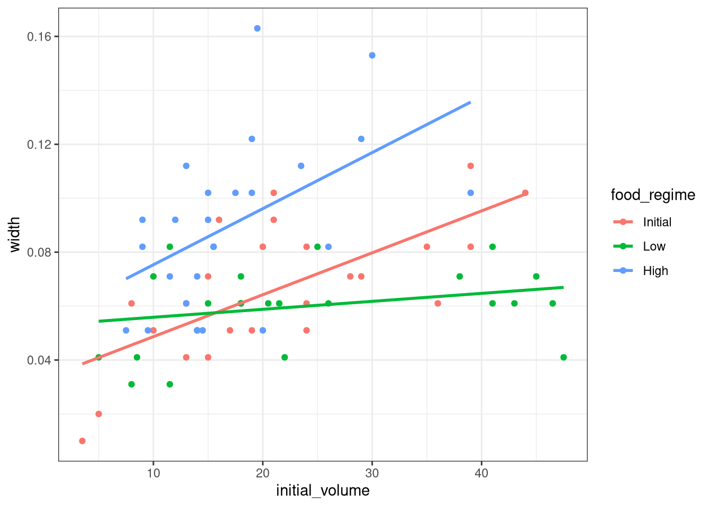
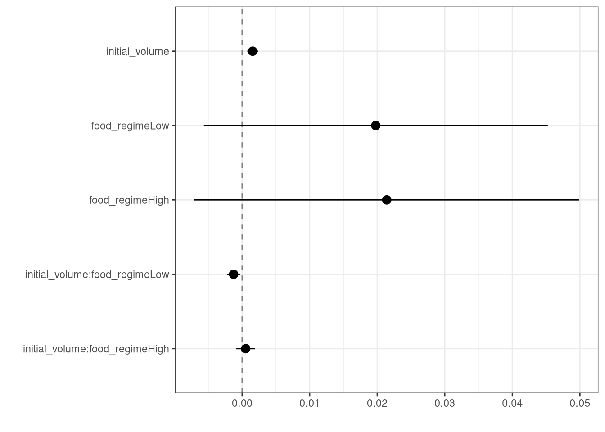
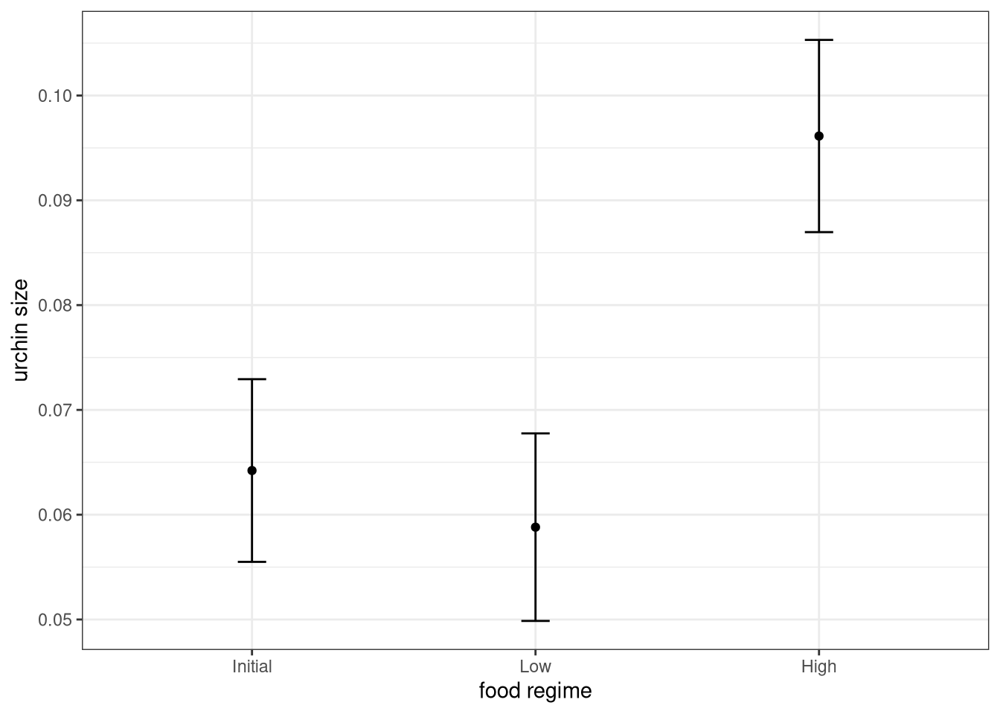

library(tidymodels) # for the parsnip package, along with the rest of tidymodels
# Helper packages
library(readr) # for importing data
library(broom.mixed) # for converting bayesian models to tidy tibbles
library(dotwhisker) # for visualizing regression resultsBuild a model
INTRODUCTION
How do you create a statistical model using tidymodels? In this article, we will walk you through the steps. We start with data for modeling, learn how to specify and train models with different engines using the parsnip package, and understand why these functions are designed this way.
To use code in this article, you will need to install the following packages: broom.mixed, dotwhisker, readr, rstanarm, and tidymodels.
THE SEA URCHINS DATA
Let’s use the data from Constable (1993) to explore how three different feeding regimes affect the size of sea urchins over time. The initial size of the sea urchins at the beginning of the experiment probably affects how big they grow as they are fed.
To start, let’s read our urchins data into R, which we’ll do by providing readr::read_csv() with a url where our CSV data is located (“https://tidymodels.org/start/models/urchins.csv”):
urchins <-
# Data were assembled for a tutorial
# at https://www.flutterbys.com.au/stats/tut/tut7.5a.html
read_csv("https://tidymodels.org/start/models/urchins.csv") |>
# Change the names to be a little more verbose
setNames(c("food_regime", "initial_volume", "width")) |>
# Factors are very helpful for modeling, so we convert one column
mutate(food_regime = factor(food_regime, levels = c("Initial", "Low", "High")))Let’s take a quick look at the data:
urchins# A tibble: 72 × 3
food_regime initial_volume width
<fct> <dbl> <dbl>
1 Initial 3.5 0.01
2 Initial 5 0.02
3 Initial 8 0.061
4 Initial 10 0.051
5 Initial 13 0.041
6 Initial 13 0.061
7 Initial 15 0.041
8 Initial 15 0.071
9 Initial 16 0.092
10 Initial 17 0.051
# ℹ 62 more rowsThe urchins data is a tibble. If you are new to tibbles, the best place to start is the tibbles chapter in R for Data Science. For each of the 72 urchins, we know their:
- experimental feeding regime group (
food_regime: eitherInitial,Low, orHigh), - size in milliliters at the start of the experiment (
initial_volume), and - suture width at the end of the experiment (
width).
As a first step in modeling, it’s always a good idea to plot the data:
ggplot(urchins,
aes(x = initial_volume,
y = width,
group = food_regime,
col = food_regime)) +
geom_point() +
geom_smooth(method = lm, se = FALSE) +
theme_bw()
We can see that urchins that were larger in volume at the start of the experiment tended to have wider sutures at the end, but the slopes of the lines look different so this effect may depend on the feeding regime condition.
BUILD AND FIT A MODEL
A standard two-way analysis of variance (ANOVA) model makes sense for this dataset because we have both a continuous predictor and a categorical predictor. Since the slopes appear to be different for at least two of the feeding regimes, let’s build a model that allows for two-way interactions. Specifying an R formula with our variables in this way:
width ~ initial_volume * food_regimeallows our regression model depending on initial volume to have separate slopes and intercepts for each food regime.
For this kind of model, ordinary least squares is a good initial approach. With tidymodels, we start by specifying the functional form of the model that we want using the parsnip package.
Since there is a numeric outcome and the model should be linear with slopes and intercepts, the model type is “linear regression”. We can declare this with:
linear_reg()Linear Regression Model Specification (regression)
Computational engine: lm That is pretty underwhelming since, on its own, it doesn’t really do much. However, now that the type of model has been specified, we can think about a method for fitting or training the model, the model engine. The engine value is often a mash-up of the software that can be used to fit or train the model as well as the estimation method. The default for linear_reg() is "lm" for ordinary least squares, as you can see above. We could set a non-default option instead:
linear_reg() %>%
set_engine("keras")Linear Regression Model Specification (regression)
Computational engine: keras The documentation page for linear_reg() lists all the possible engines. We’ll save our model object using the default engine as lm_mod.
lm_mod <- linear_reg()From here, the model can be estimated or trained using the fit() function:
lm_fit <-
lm_mod %>%
fit(width ~ initial_volume * food_regime, data = urchins)
lm_fitparsnip model object
Call:
stats::lm(formula = width ~ initial_volume * food_regime, data = data)
Coefficients:
(Intercept) initial_volume
0.0331216 0.0015546
food_regimeLow food_regimeHigh
0.0197824 0.0214111
initial_volume:food_regimeLow initial_volume:food_regimeHigh
-0.0012594 0.0005254 lm_fit <-
lm_mod %>%
fit(width ~ initial_volume + food_regime +
initial_volume:food_regime, data = urchins)
lm_fitparsnip model object
Call:
stats::lm(formula = width ~ initial_volume + food_regime + initial_volume:food_regime,
data = data)
Coefficients:
(Intercept) initial_volume
0.0331216 0.0015546
food_regimeLow food_regimeHigh
0.0197824 0.0214111
initial_volume:food_regimeLow initial_volume:food_regimeHigh
-0.0012594 0.0005254 Perhaps our analysis requires a description of the model parameter estimates and their statistical properties. Although the summary() function for lm objects can provide that, it gives the results back in an unwieldy format. Many models have a tidy() method that provides the summary results in a more predictable and useful format (e.g. a data frame with standard column names):
lm_fit |>
tidy() |>
kable()| term | estimate | std.error | statistic | p.value |
|---|---|---|---|---|
| (Intercept) | 0.0331216 | 0.0096186 | 3.4434873 | 0.0010020 |
| initial_volume | 0.0015546 | 0.0003978 | 3.9077643 | 0.0002220 |
| food_regimeLow | 0.0197824 | 0.0129883 | 1.5230864 | 0.1325145 |
| food_regimeHigh | 0.0214111 | 0.0145318 | 1.4733993 | 0.1453970 |
| initial_volume:food_regimeLow | -0.0012594 | 0.0005102 | -2.4685525 | 0.0161638 |
| initial_volume:food_regimeHigh | 0.0005254 | 0.0007020 | 0.7484702 | 0.4568356 |
This kind of output can be used to generate a dot-and-whisker plot of our regression results using the dotwhisker package:
lm_fit |>
tidy() |>
dwplot(dot_args = list(size = 3, color = "black"),
whisker_args = list(color = "black"),
vline = geom_vline(xintercept = 0, colour = "grey50", linetype = 2)) +
theme_bw()
USE A MODEL TO PREDICT
This fitted object lm_fit has the lm model output built-in, which you can access with lm_fit$fit, but there are some benefits to using the fitted parsnip model object when it comes to predicting.
Suppose that, for a publication, it would be particularly interesting to make a plot of the mean body size for urchins that started the experiment with an initial volume of 20ml. To create such a graph, we start with some new example data that we will make predictions for, to show in our graph:
new_points <- expand.grid(initial_volume = 20,
food_regime = c("Initial", "Low", "High"))
new_points initial_volume food_regime
1 20 Initial
2 20 Low
3 20 Highnew_points |>
kable()| initial_volume | food_regime |
|---|---|
| 20 | Initial |
| 20 | Low |
| 20 | High |
To get our predicted results, we can use the predict() function to find the mean values at 20ml.
It is also important to communicate the variability, so we also need to find the predicted confidence intervals. If we had used lm() to fit the model directly, a few minutes of reading the documentation page for predict.lm() would explain how to do this. However, if we decide to use a different model to estimate urchin size (spoiler: we will!), it is likely that a completely different syntax would be required.
Instead, with tidymodels, the types of predicted values are standardized so that we can use the same syntax to get these values.
First, let’s generate the mean body width values:
mean_pred <- predict(lm_fit, new_data = new_points)
mean_pred# A tibble: 3 × 1
.pred
<dbl>
1 0.0642
2 0.0588
3 0.0961mean_pred |>
kable()| .pred |
|---|
| 0.0642144 |
| 0.0588094 |
| 0.0961334 |
When making predictions, the tidymodels convention is to always produce a tibble of results with standardized column names. This makes it easy to combine the original data and the predictions in a usable format:
conf_int_pred <- predict(lm_fit,
new_data = new_points,
type = "conf_int")
conf_int_pred# A tibble: 3 × 2
.pred_lower .pred_upper
<dbl> <dbl>
1 0.0555 0.0729
2 0.0499 0.0678
3 0.0870 0.105 # Now combine:
plot_data <-
new_points %>%
bind_cols(mean_pred) %>%
bind_cols(conf_int_pred)
# and plot:
ggplot(plot_data, aes(x = food_regime)) +
geom_point(aes(y = .pred)) +
geom_errorbar(aes(ymin = .pred_lower,
ymax = .pred_upper),
width = 0.1) +
labs(y = "urchin size", x = "food regime") +
theme_bw()